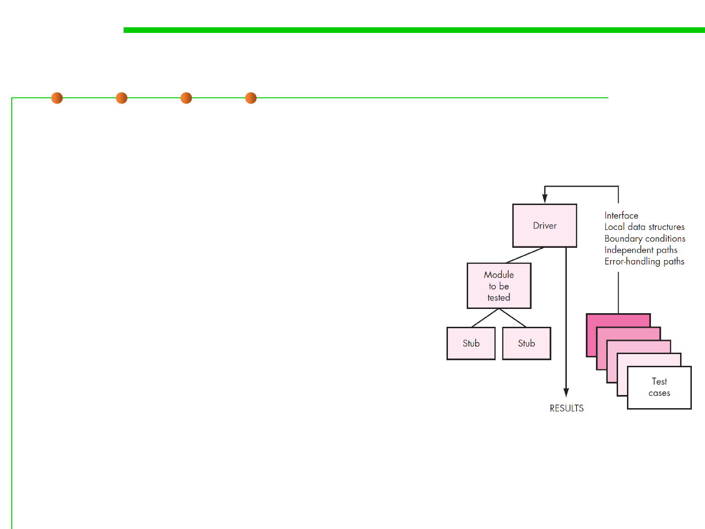

Unit-test procedures
7.5 Testing and Test-First Programming
▪ Because a component is not a stand-alone
program, driver and/or stub software must
often be developed for each unit test.
▪ Driver(驱动模块) : In most applications a
driver is nothing more than a “main
program” that accepts test case data, passes
such data to the component (to be tested),
and prints relevant results.
▪ Stubs(桩模块) serve to replace modules that
are subordinate (invoked by) the
component to be tested. A stub or “dummy
ubprogram” uses the subordinate module’s
interface, may do minimal data
manipulation, prints verification of entry,
and returns control to the module
undergoing testing.